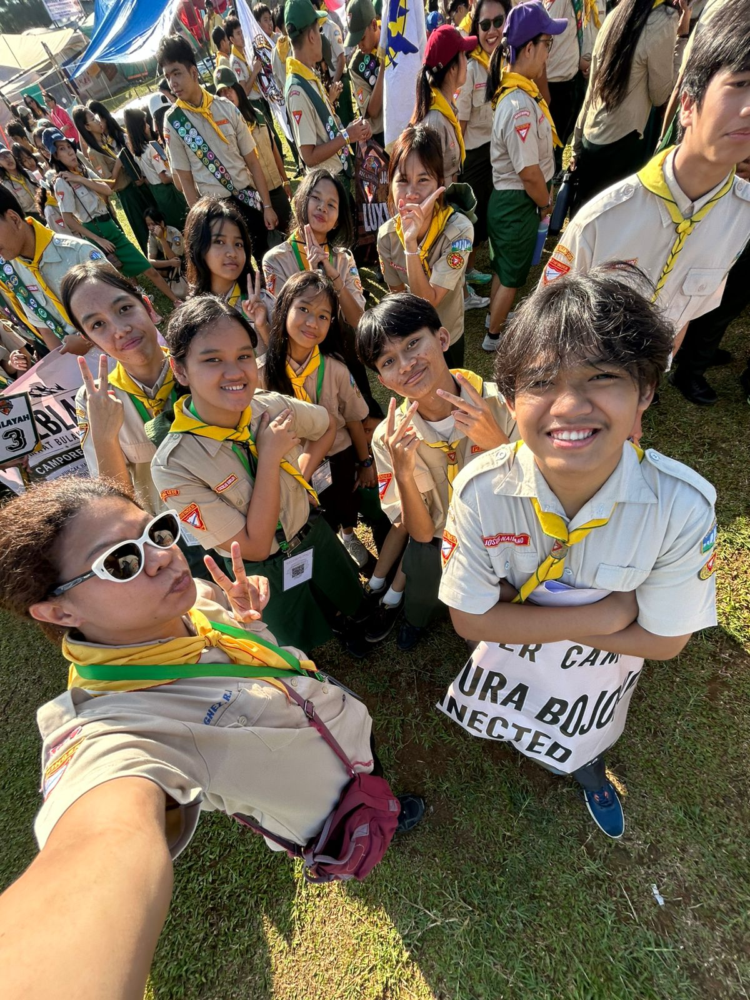
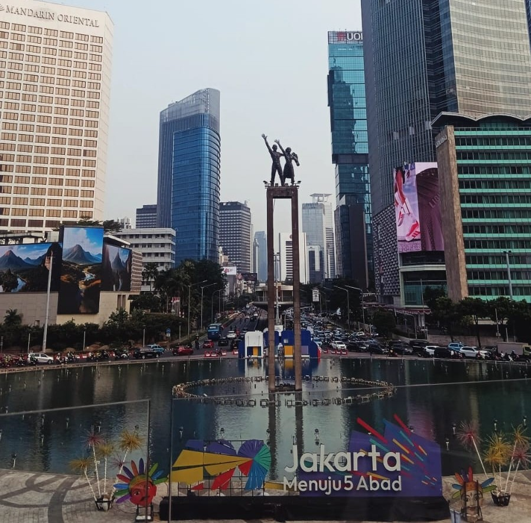
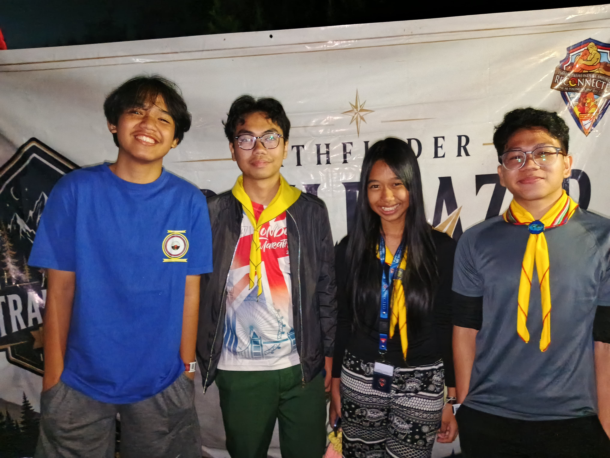
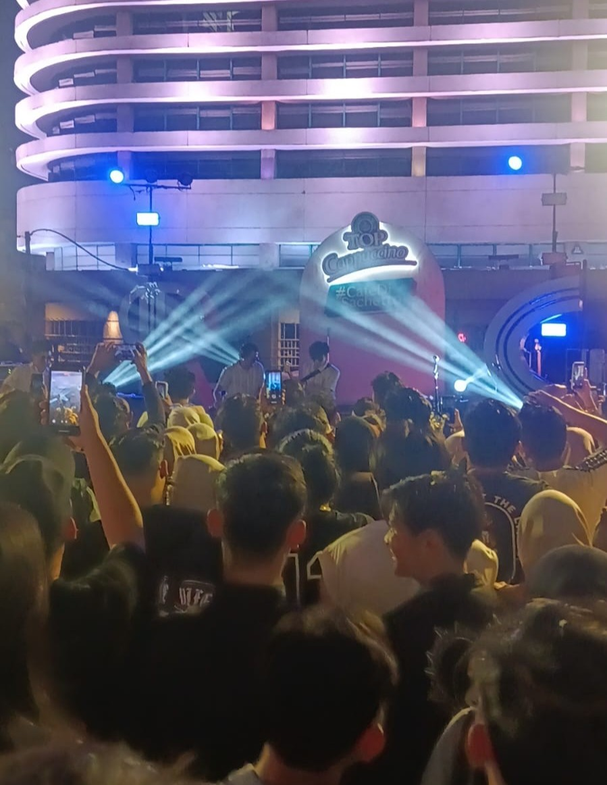
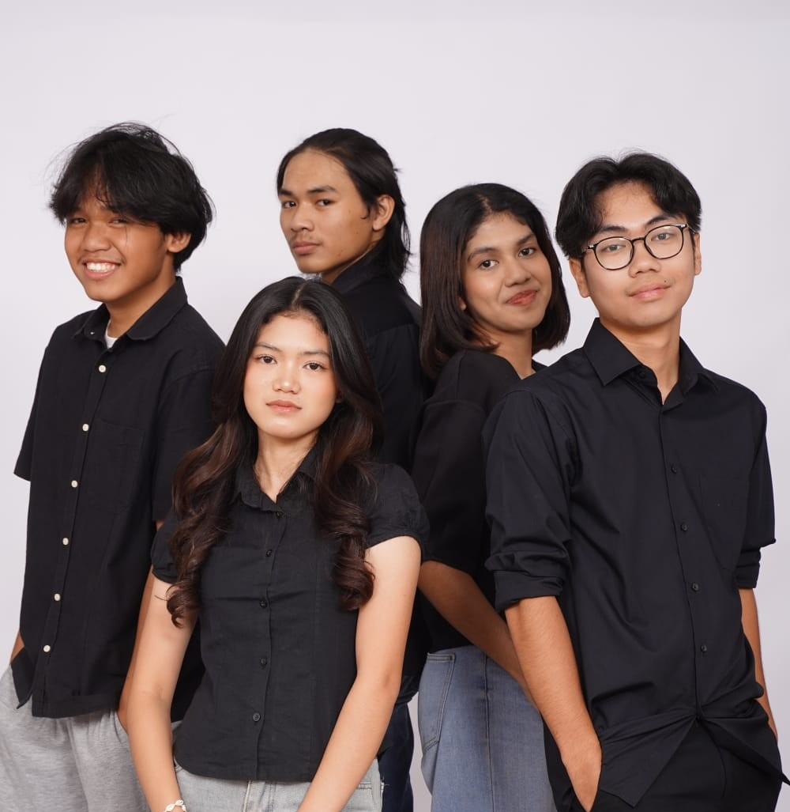
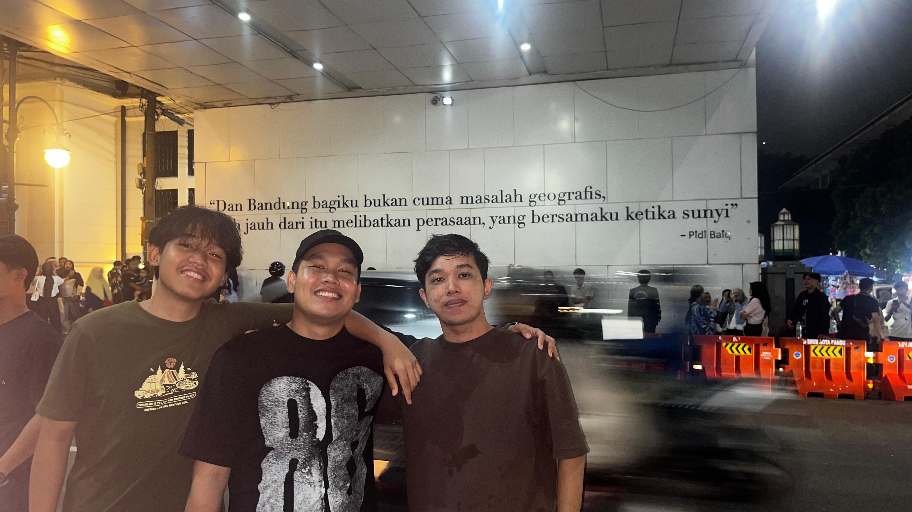
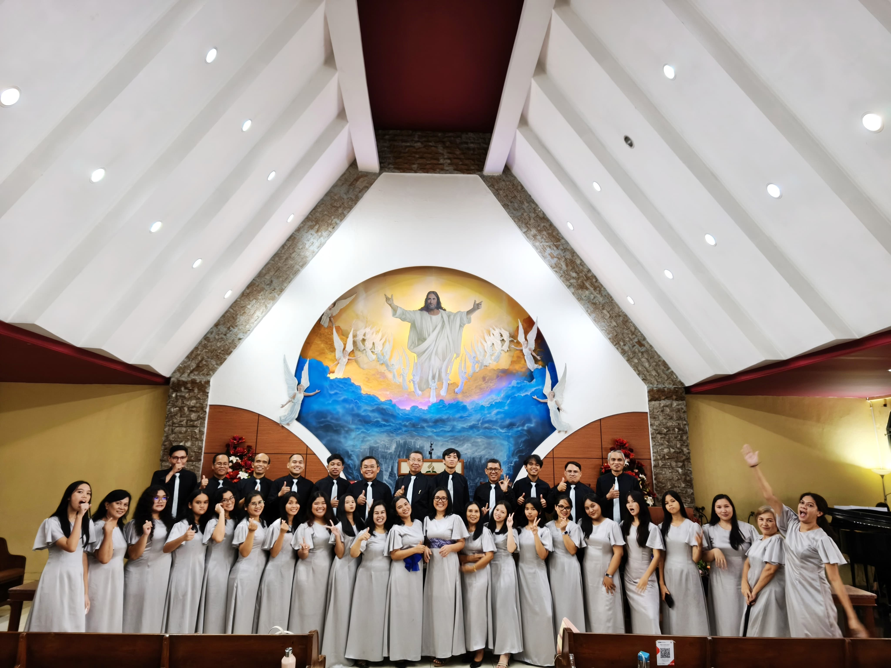

My Holiday
Beberapa momen liburan yang berkesan buat saya.
Cerita Liburan Saya
Liburan kali ini berlangsung cukup lama, sekitar 3 bulan, dan sebagian besar waktu aku habiskan di rumah bersama keluarga. Meski begitu, aku tetap menyempatkan diri untuk jalan-jalan ke beberapa tempat yang berkesan. Salah satunya adalah Bandung, tempat aku berkeliling kota sambil menginap di VIB (Vila Istana Bandung) selama beberapa hari, menikmati udara sejuk dan suasana kota yang khas. Selain itu, aku juga menjelajahi Jakarta dan mengunjungi tempat-tempat ikonik seperti Monas, Kota Tua, dan Bundaran HI, sambil sesekali berhenti untuk mencicipi kuliner khas di sekitar sana. Tidak berhenti di situ, aku juga menikmati suasana pantai yang menenangkan dan hangat di Anyer bersama teman-teman dan keluarga, bermain air dan menikmati matahari terbenam yang indah, serta merasakan sejuknya udara pegunungan dengan camping di kawasan Puncak bersama keluarga besar, sebuah pengalaman yang benar-benar tak terlupakan. Semua perjalanan ini membuatku semakin bersyukur bisa menghabiskan waktu berkualitas bersama orang-orang terdekat.






